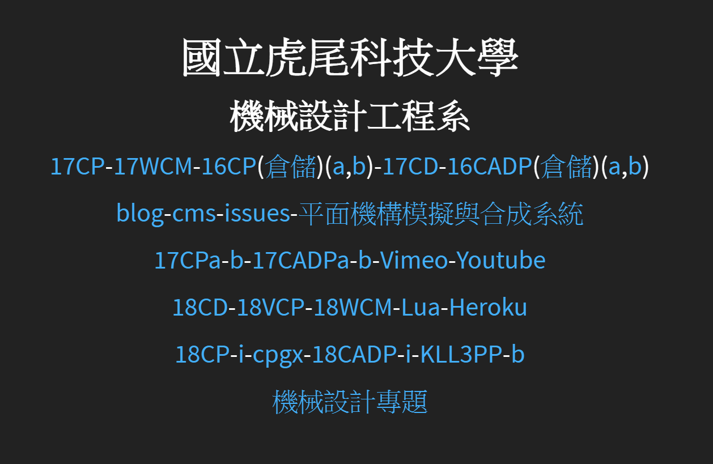
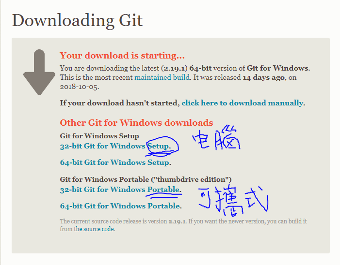
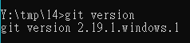

week5
git更新了，有了最新的版本，為此我們也要跟進，來更新一下現在正在使用的可攜式系統-p37
步驟如下 :
1.首先，進到"mde.tw"點選18CP右邊的"i"

2.點選"git 更新"

3.點選畫底線的網址進入載點頁面

4.如果是為自己電腦裡的git系統進行更新的話，點選setup 為隨身碟更新擇點選portable

5.將載下來的檔案解壓縮，全部選取後將檔案丟進y曹的git，取代舊系統

6.最後，使用指令"git version"確認是否為最新版本
如果為2.19.1，即完成。

Week3 << Previous Next >> week6